Sedum
Table Lamp
Sedum is a table lamp I designed, produced, and sold as a run of 100. I worked through every stage myself — the form, the electronics, the prototype, the factory relationship, the packaging, and the sales — and treated each one as its own problem. The point was to take a single object from a sketch to a boxed product on someone's shelf, and to learn what that actually takes.

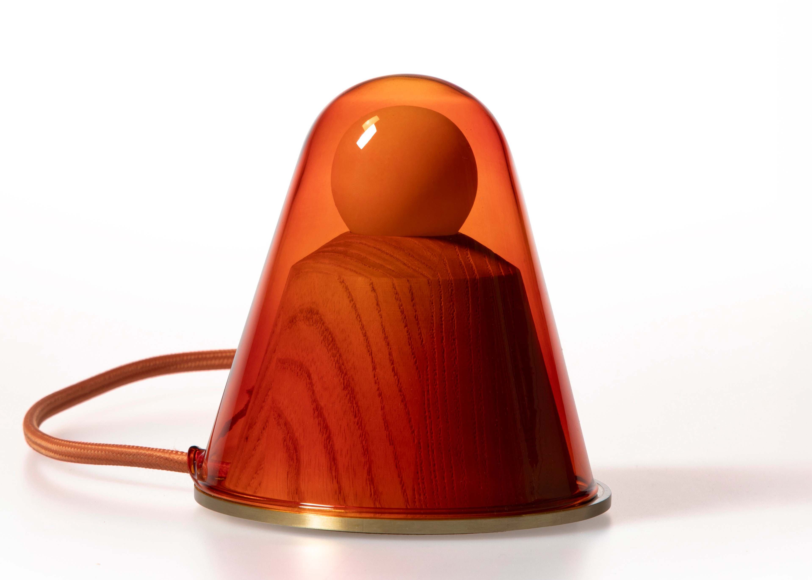
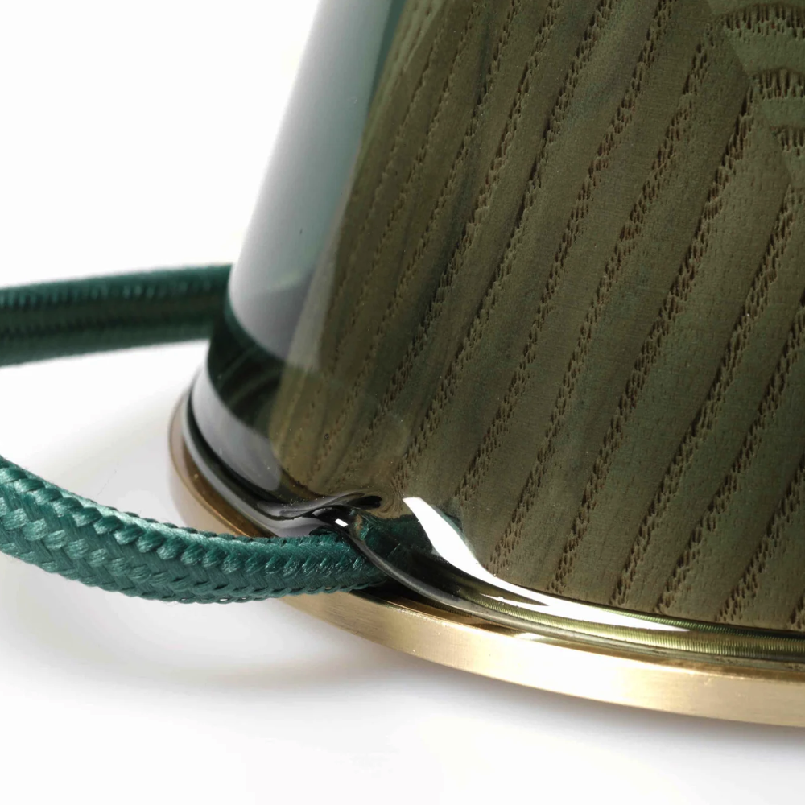
The design process a cycle of making choices, testing them, iterating, and refining. In the early stages, I was focused on the form of the lamp and how it would be made. I also had the material interactions in mind, and how the product would behave in a room. Designing and prototyping worked together to form the final product. I sourced electrical components from online distributors, built the circuit board by hand, and used the CNC to work through design iterations of the wood base.
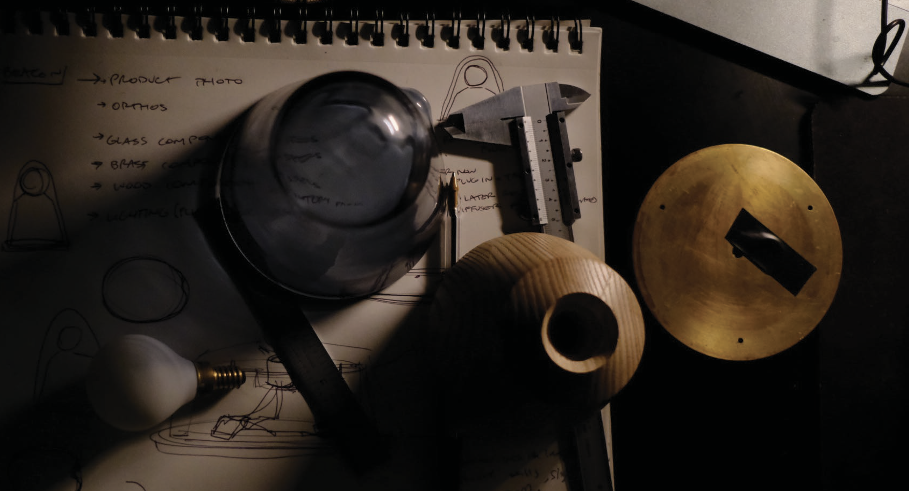
Components and early sketches — glass dome, brass ring, turned wood base
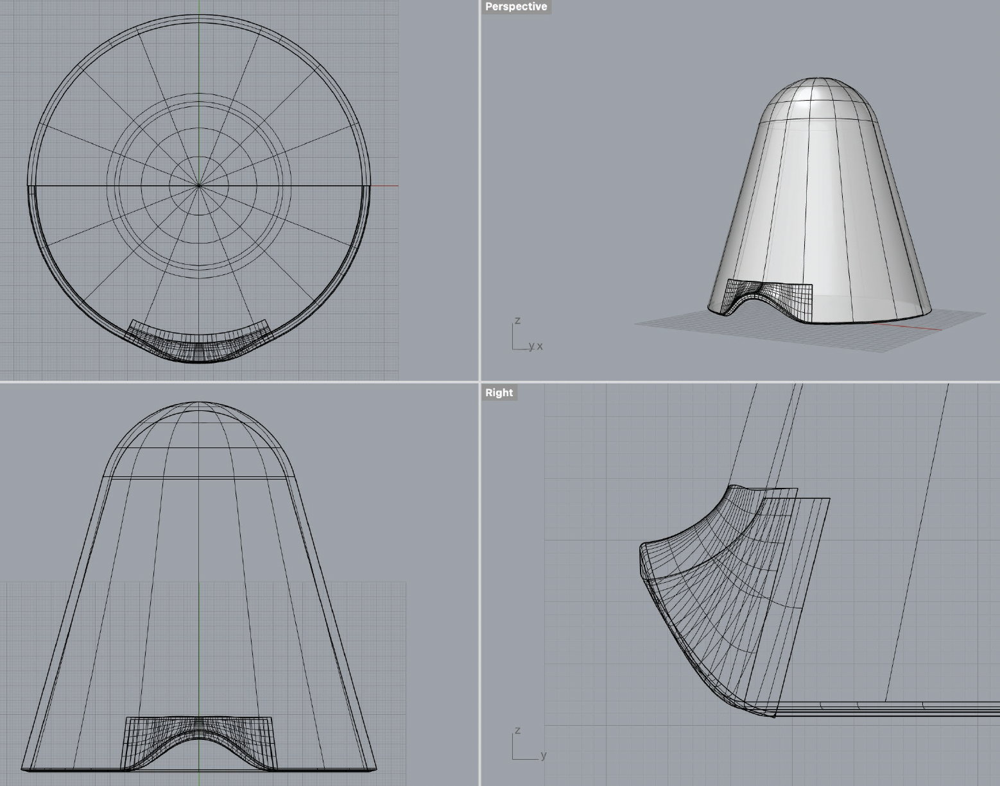
Rhino 3D model — top, perspective, front, and section views
Digital modeling in Rhino was the bridge between the sketched concept and the fabrication specification. The geometry of the glass dome needed to be precisely defined: the radius, the taper angle, the opening diameter at the base, so it could be communicated to a glassblower and then to a mold manufacturer without ambiguity. Small changes to those parameters had large effects on both the lamp's proportions and its light behavior. The primary constraint for this lamp was making the base as small as possible while still accommodating the circuit board, socket, and wiring.
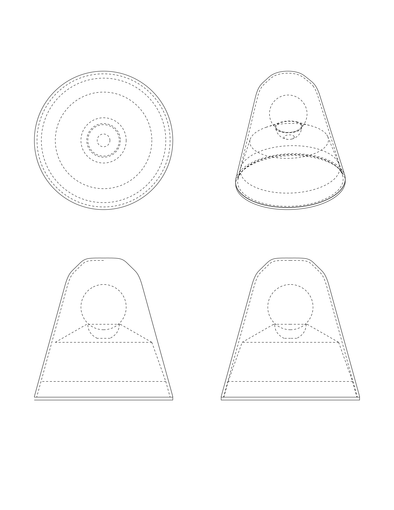
Early form iteration — exploring the relationship between dome height and base volume
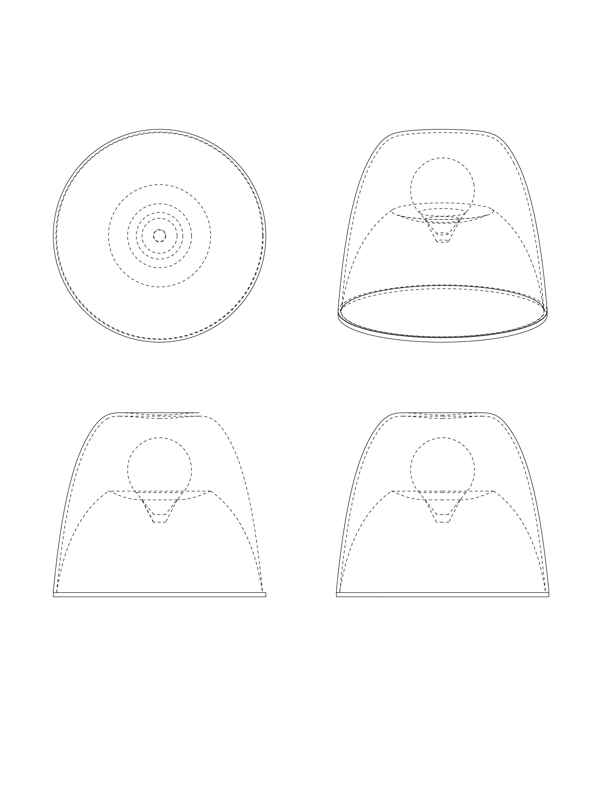
The initial sample was made by hand in Providence, RI. Working with local artisans for the glass and brass components and CNCing the wood base in my own shop, the goal was to resolve all the structural and electrical questions at full scale before involving any manufacturer. Extensive color, shape, and material testing also took place during this process.
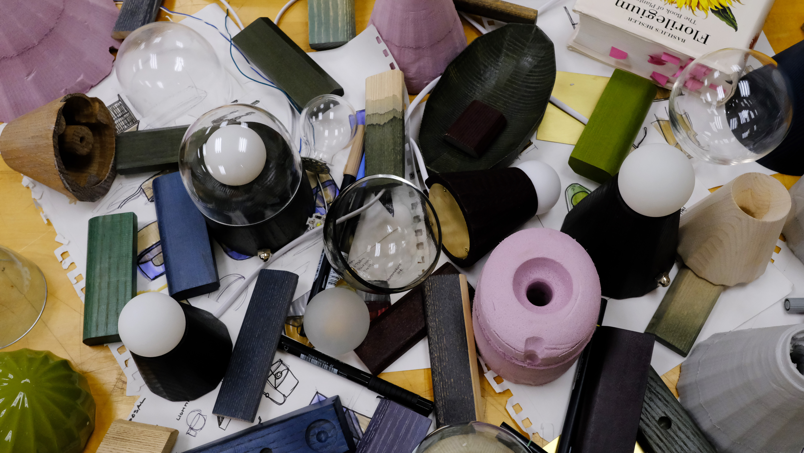
Mid-process spread — a range of models, glass domes, and wood bases being evaluated simultaneously
The electrical system was developed in-house using a mix of prefabricated elements and custom PCB circuitry. The constraint was the base: the circuit, socket, and wiring all needed to fit inside the turned wood form without compromising the structural integrity of the base or making assembly unrepeatable. Getting that internal geometry right required several iterations of the base before the PCB dimensions were finalized.
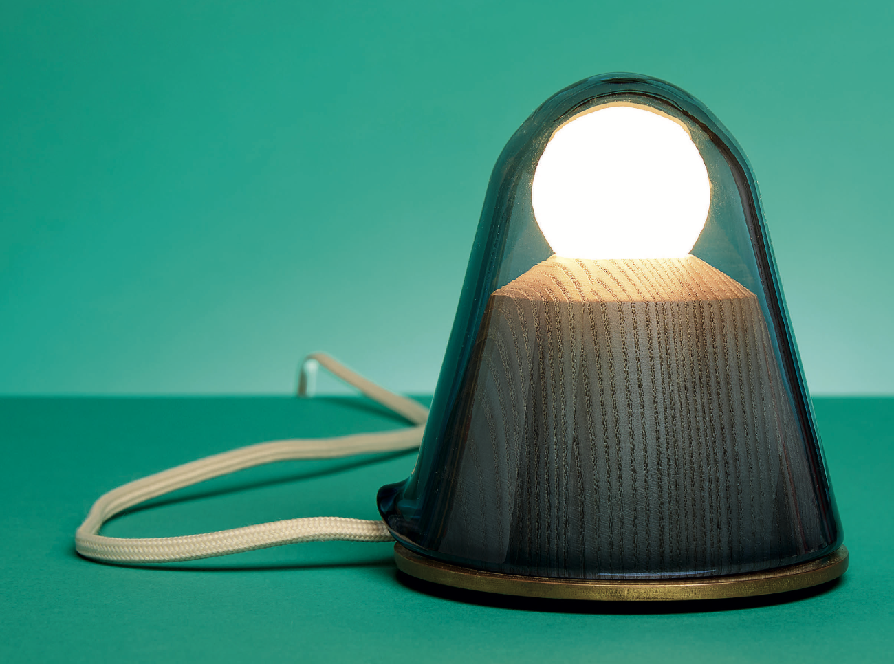
The final finished pre-manufacturing prototype
Moving from a handmade prototype to a run of 100 required translating every design decision into a document a factory could act on. That meant full engineering drawings for each component with tolerances, cross-sections, material specs, and assembly sequence rather than the looser references that work when you're in the same room as the person making the part.
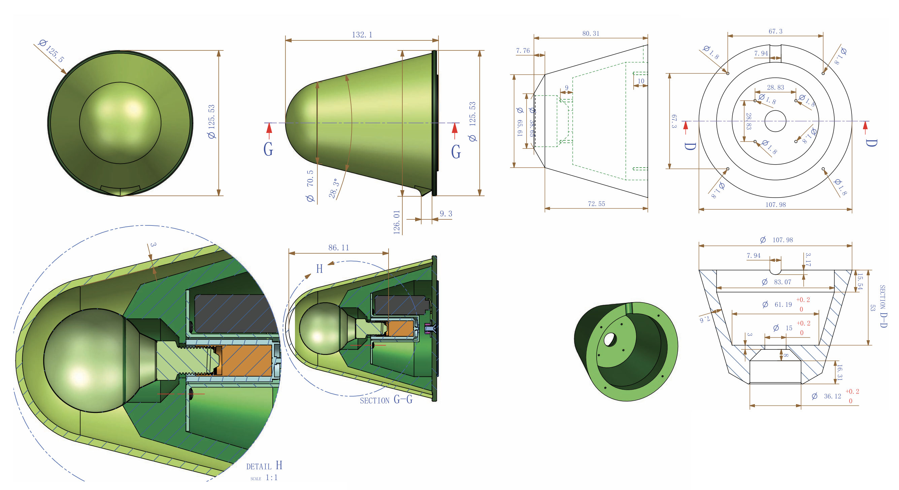
Manufacturing specification — dimensioned views, cross-section showing internal assembly, tolerance callouts
The production run was manufactured in Dongguan in four colorways. Managing that relationship remotely required being very precise about what the drawings specified and very clear about what was and wasn't a permissible deviation. Glass manufacturing in particular involves variables such as color consistency, wall thickness, the behavior of the mold over a production run, ones that need to be discussed explicitly up front rather than discovered in the first shipment. The manufacturing documentation was built to be reusable: a second production run could be ordered without re-engineering anything, just referencing the existing spec set.
Packaging was designed alongside the lamp rather than after it. The constraint was shipping: the glass dome is fragile, the brass ring is heavy, and the cord needs to arrive without kinks. The solution was a custom foam insert inside a plain kraft box — protective enough for e-commerce shipping, simple enough to not add significant unit cost.
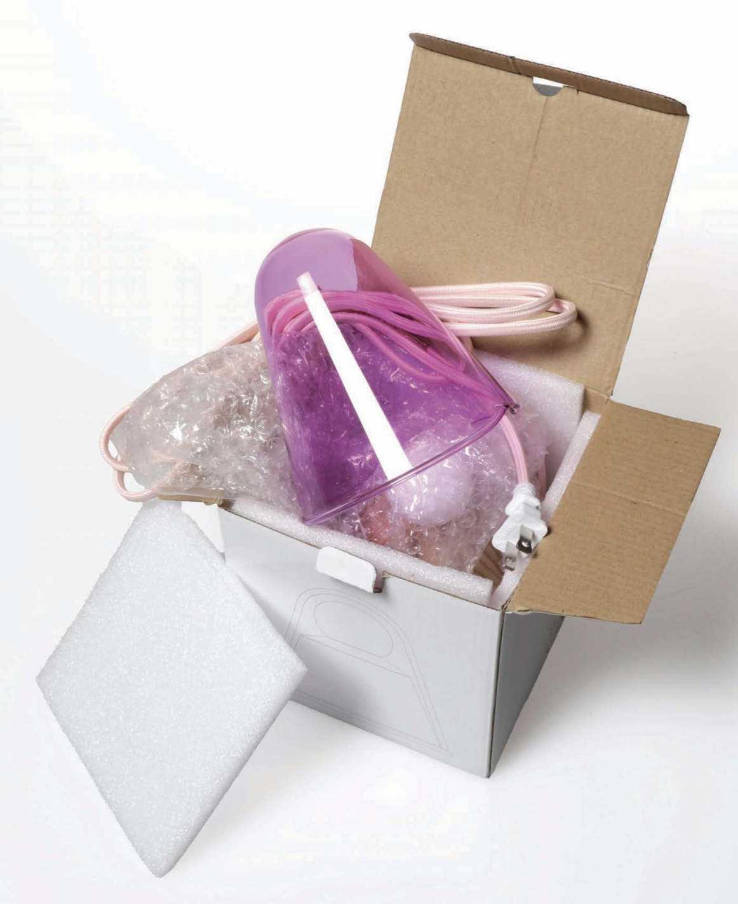
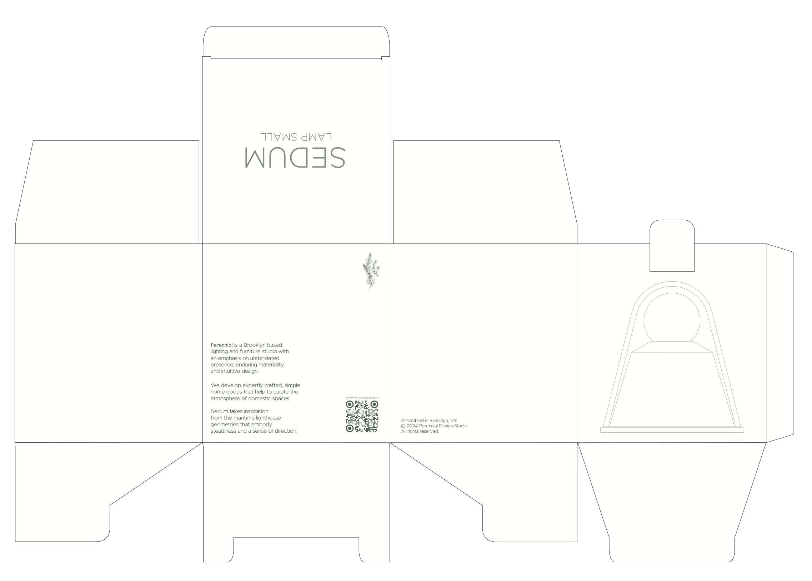
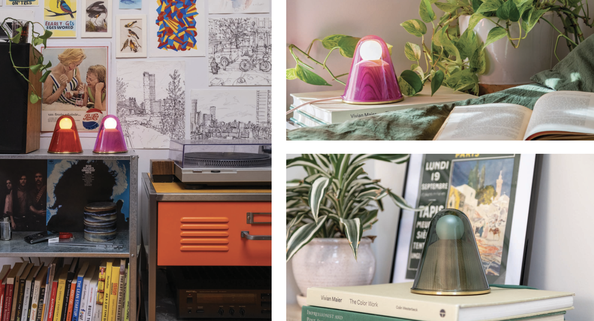
lifestyle photography
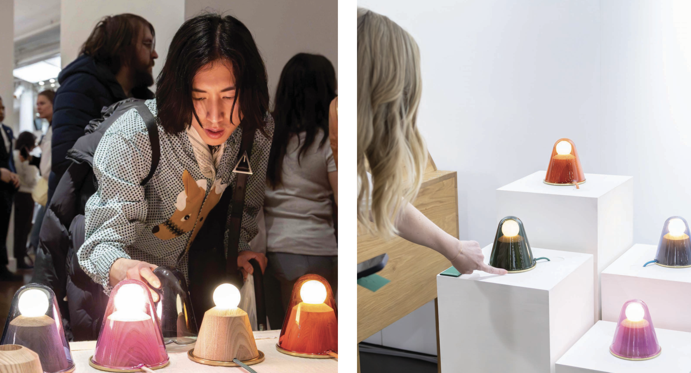
ICFF — the lamps displayed across four colorways, in conversation with visitors
Trade show exhibition, including ICFF, served a different purpose than retail: direct conversations with designers, buyers, and press, and a concentrated opportunity to show all four colorways in the same space. The Brown Alumni Magazine Holiday Gift Guide feature came out of that outreach, which in turn drove a sustained period of online interest.